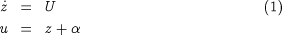
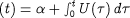
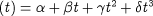
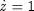
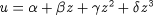
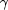
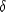

Different types of control variable profile
The dynamic optimisation facilities in gPROMS support piecewise-constant and piecewise-linear controls of the types shown in subfigures (a) and (b) respectively. These are by far the most commonly encountered in practical applications. However, if necessary, it is relatively straightforward to introduce several other types of control. For instance, a piecewise-linear continuous control of the type shown in subfigure (c) can be defined by adding the equations:

where:
z is a new differential variable with initial condition z(0)=0;
U is a new piecewise-constant control variable (cf. subfigure (a)) to be determined by the optimisation;
 is a new time invariant parameter representing the initial value of u (i.e. ), to be determined by the optimisation.
is a new time invariant parameter representing the initial value of u (i.e. ), to be determined by the optimisation.
We note that this is equivalent to:

which expresses the fact that the time gradient of a piecewise-linear continuous control is a piecewise-constant function of time.
Also a cubic polynomial control variation of the form:

can be introduced by adding the following to the model equations:

Together with the initial condition z(0)=0, this equation effectively defines z as time.

By virtue of this equation, the variable u becomes one of the algebraic variables y to be determined by solving the model equations.
The actual control variation is determined by the values of , ,  and  which should now be treated as time invariant parameters v.